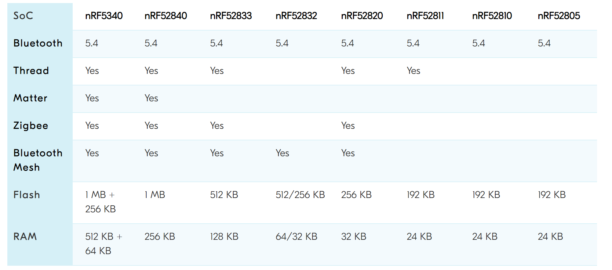

แนะนำชิปไมโครคอนโทรลเลอร์ของบริษัท Nordic Semiconductor - nRF SoCs#
▷ Nordic nRF SoCs#
Nordic Semiconductor เป็นบริษัทผู้พัฒนาชิป SoC ที่มีซีพียูตามสถาปัตยกรรม Arm Cortex-M อยู่ภายใน และมีอยู่หลายตระกูลให้เลือกใช้ เช่น nRF51xx / nRF52xx / nRF53xx ตามข้อมูลในตารางต่อไปนี้

ตาราง: การเปรียบเทียบข้อมูลของชิป SoC ของบริษัท Nordic Semiconductor ข้อมูลในปีค.ศ. 2022 (Source: Nordic Semiconductor)
ตัวอย่างบอร์ดไมโครคอนโทรลเลอร์ของ Nordic ที่ได้รับความนิยมและใช้งานสำหรับการสื่อสารไร้สายด้วยโพรโทคอล 2.4GHz Bluetooth / BLE เช่น
- nRF51822 (Arm Cortex-M0): ไม่แนะนำเลือกใช้งานสำหรับการออกแบบบอร์ดใหม่
- nRF52832 (Arm Cortex-M4F): ไม่แนะนำเลือกใช้งานสำหรับการออกแบบบอร์ดใหม่
-
nRF52840 (Arm Cortex-M4F):
- Nordic nRF52840-DK PCA10056
- Nordic nRF52840 Dongle (PCA10059)
- SparkFun Pro nRF52840 Mini - Bluetooth Development Board
- Adafruit Feather nRF52840 Express
- Adafruit Feather nRF52840 Sense
- Adafruit ItsyBitsy nRF52840 Express
- Adafruit CLUE - nRF52840 Express
- Particle Xenon
- Arduino Nano 33 BLE / Nano 33 BLE Sense
- nRF52840 MDK USB Dongle (PCBA)
- Seeed Studio XIAO nRF52840 / XIAO nRF52840 Sense
- Smart Prototyping - ZIO Qwiic nRF52840 Dev Board
-
nRF52833 (Arm Cortex-M4F):
-
nRF5340 (Arm Cortex-M33):
จากรายการตัวอย่างบอร์ดไมโครคอนโทรลเลอร์ จะเห็นได้ว่า ชิป nRF52840 (เปิดตัวครั้งแรกในราวปีค.ศ. 2017) ได้รับความนิยมมากกว่ารุ่นอื่น และมีจุดเด่นคือ รองรับการสื่อสารข้อมูลไร้สายและใช้ได้หลายโพรโทคอล (Multi-protocol Wireless Communication) เช่น
- Bluetooth 5.1 / Bluetooth Low Energy (BLE) / Bluetooth Mesh
- ZigBee
- Thread
- Matter
- ANT / 2.4 GHz proprietary stacks
nRF52833 และ nRF5340 เป็นชิปรุ่นที่ใหม่กว่า และคาดว่า จะมีบอร์ดหรือฮาร์ดแวร์ที่ใช้ชิปดังกล่าวทยอยออกสู่ตลาด
ข้อมูลเชิงเทคนิคของชิป nRF52840 Multi-Protocol SoC
- CPU: 32-bit ARM Cortex-M4 with FPU, up to 64 MHz
- On-chip Memory:
- 1MB Flash
- 256KB SRAM
- On-chip ARM TrustZone CryptoCell cryptographic unit
- Wireless Transceivers (2.4GHz)
- Bluetooth 5.3
- IEEE 802.15.4-2006 (Data rate: up to 250 kbps)
- 2.4 GHz Nordic Proprietary Wireless Protocl (up to 2Mbps)
- On-chip Interfaces
- 48 GPIO pins
- 8-channel, 12-bit, 200 ksps ADC
- 4x 4-channel PWM unit
- Audio: I2S (Inter-IC Sound) / PDM (Pulse Density Modulation)
- 5x 32-bit Timer with counter mode
- Up to 4x SPI Master / 3x SPI Slave
- Up to 2x I2C 2-wire (Master/Slave)
- 2x UART (CTS/RTS)
- Quadrature Decoder (QDEC)
- 3x Real-Time Counter
- USB 2.0 full speed (12 Mbps) Controller
- QSPI (32MHz)
- Integrated NFC-A Tag
- Programmable Peripheral Interconnect (PPI)
- EasyDMA Data Transfer

ตาราง: การเปรียบเทียบระหว่างชิป nRF52xx / nRF53xx (Source: Nordic Semiconductor)
การสื่อสารด้วย Bluetooth สำหรับชิป nRF5xx จะต้องใช้เฟิร์มแวร์ของบริษัท Nordic ซึ่งมีชื่อว่า SoftDevice ทำหน้าที่เป็น Wireless Protocol Stack สำหรับโพรโทคอล Bluetooth Low Energy (BLE) และ ANT และจะต้องเขียนเฟิร์มแวร์ดังกล่าวลงในหน่วยความจำแฟลชภายในชิป เฟิร์มแวร์ SoftDevices มีหลายเวอร์ชัน ซึ่งมีการจำแนกตามโพรโทคอล Bluetooth LE และรูปแบบของอุปกรณ์ที่ต้องการใช้งาน เช่น BLE Peripheral, BLE Central และ BLE Central & Peripheral
สำหรับการใช้งาน BLE (Central & Peripheral) ก็มีเวอร์ชันของ SoftDevice ให้ใช้งานดังนี้
- nRF51822:
S130 - nRF52832:
S132 - nRF52840:
S140 - nRF52833:
S140
▷ ตัวเลือกสำหรับการเขียนโปรแกรมด้วยภาษา C/C++#
การเขียนโค้ดด้วยภาษา C/C++ สำหรับชิป nRF SoC มีซอฟต์แวร์มากกว่าหนึ่งตัวเลือก เช่น
- ซอฟต์แวร์ nRF MDK (Microcontroller Development Kit) และใช้งานร่วมกับ IDE อย่างเช่น SEGGER Embedded Studio (SES)
- ซอฟต์แวร์ VS Code IDE + nRF Connect SDK for VS Code ของบริษัท Nordic ซึ่งรองรับการใช้งาน Zephyr RTOS
- ซอฟต์แวร์ Arduino IDE และติดตั้ง Arduino Core (Mbed) for nRF52 หรือ Arduino Core for nRF5 (by Sandeep Mistry) และเขียนโปรแกรมด้วย Arduino Sketch — เหมาะสำหรับผู้เริ่มต้นหรือคุ้นเคยกับการเขียนโค้ดด้วย Arduino Sketch
- ซอฟต์แวร์ Arduino IDE และติดตั้ง Adafruit Core for nRF52 — เหมาะสำหรับผู้ที่ใช้บอร์ดของบริษัท Adafruit
- ซอฟต์แวร์ VS Code IDE + PlatformIO extension และเขียนโปรแกรมด้วย Arduino Framework หรือ Zephyr RTOS Framework — เหมาะสำหรับผู้ที่ใช้ต้องการใช้ VS Code IDE
- ซอฟต์แวร์ Mbed Studio IDE — แต่ต้องใช้งานร่วมกับ Arm Mbed OS 6.x
ตัวเลือกสำหรับ Arduino Core สำหรับชิป nRF51 / 52 SoCs ที่สามารถเลือกใช้ได้ (ขึ้นอยู่กับบอร์ดไมโครคอนโทรลเลอร์ที่จะนำมาใช้งานด้วย)
- Arduino Core for Mbed Devices:
ArduinoCore-mbed - Arduino Core for nRF:
package_nRF5_boards_index.json - Adafruit:
package_adafruit_index.json - Seeed Studio:
package_seeeduino_boards_index.json
ถ้าจะเขียนโปรแกรมด้วย Arduino Sketch ชิป nRF5xx จะต้องมีการติดตั้ง Arduino Bootloader เพื่อจะทำให้ผู้ใช้สามารถอัปโหลดโค้ดผ่านทาง USB-Serial (USB-CDC) ได้โดยไม่จำเป็นต้องใช้อุปกรณ์ที่เรียกว่า SWD Programmer / Debugger เช่น SEGGER J-Link หรือ CMSIS-DAP Debug Probe
▷ สรุป#
บทความนี้ได้นำเสนอชิป nRFxx SoC ของบริษัท Nordic Semiconductor ในเบื้องต้น ได้นำเสนอตัวอย่างบอร์ดที่สามารถนำมาใช้ทดลองเขียนโค้ดได้ แม้ว่าชิปในซีรีย์ nRF52 / nRF53 จะไม่รองรับการใช้งาน WiFi แต่ก็ถือว่าเป็นตัวเลือกที่น่าสนใจสำหรับผู้ที่ต้องการพัฒนาระบบสมองกลฝังตัวที่สามารถสื่อสารไร้สายด้วยหลายโพรโทคอล ด้วยคลื่นความถี่ในย่าน 2.4GHz และเหมาะสำหรับการนำไปประยุกต์ใช้งานในระบบสมาร์ทโฮม เช่น ZigBee / Thread / Matter
This work is licensed under a Creative Commons Attribution-ShareAlike 4.0 International License.
Created: 2023-09-05 | Last Updated: 2023-09-08